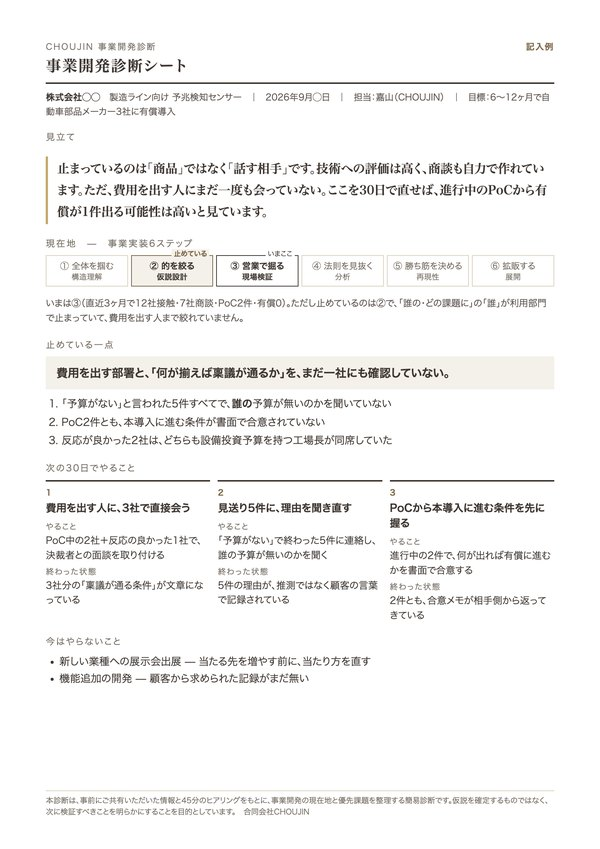

スタートアップ向け無料
オンラインで45分、いまどうやって顧客を探しているかを伺います。事業を止めている一点と、次の30日でやること3つを、A4一枚にして返します。

進まない原因は、営業とは限りません。商談が増えないのは会っている部署が違うから、PoCで止まるのは費用を出す人に会えていないから、ということがよくあります。だから最初に「どこで止まっているか」だけを見ます。技術やプロダクトの良し悪しを評価する場ではありません。
見ないもの：財務・資金調達・法務・知財・人事制度・技術開発そのもの。見るのは、顧客起点で事業を市場に出し、検証し、売上につなげる領域だけです。
このページのために作った評価軸ではなく、CHOUJINが自分たちの事業開発で使っている型です。この順に伺って、止まっている場所が見えたら、残りの時間はそこの事実確認に使います。
| ① 全体を掴む | 業界の成り立ち、商流、予算、導入に関わる意思決定者を把握できているか |
|---|---|
| ② 的を絞る | 誰の、どの課題に、どう応えるかが一点に絞れているか |
| ③ 営業で掘る | 実際の顧客に会い、反応と本音を一次情報として集めているか |
| ④ 法則を見抜く | 受注・失注・見送りの理由を整理し、次の仮説に反映できているか |
| ⑤ 勝ち筋を決める | 成功パターンが複数の顧客で再現され、言葉にできているか |
| ⑥ 拡販する | 特定の個人に依存せず、組織で同じ動きと判断を再現できるか |
止まる場所は、ほとんどが②か③です。①を飛ばしたまま作り込んだ結果、そうなります。点数はつけません。
なぜ無料か、先に書いておきます。
ディープテックの会社と仕事をしていて、いちばん多いのが「技術はいい、お金も入った、でも顧客が増えない」です。話を聞くと、できていないことは山ほど出てきます。ただ、それは本人が一番分かっていて、利害のない外の人間に一度しゃべると整理がつく、というだけのことが多い。
私たちは、事業開発がどこで止まるのかを、一社ずつ聞いて溜めたいと思っています。それが自分たちの仕事の精度を上げるので、この診断は無料でいい。だから、ここから営業はしません。手伝ってほしいと思ったときだけ、連絡をください。
CHOUJINは事業開発が本業の会社です。資料の中で戦略を作るのではなく、自分たちで電話をかけ、商談に出て、顧客をつくる側にいます。遺伝子検査のサービスでは、導入実績のなかった健康保険組合の市場に約400件アプローチして約150件の商談を作り、40社に入りました。技術の良し悪しではなく、当たる先の選び方と回数で決まった案件です。ほかに、宇宙×半導体の産業ヒアリング（大手企業40社）、医療機器や電力センシング技術の事業開発、製造業向け新規事業の営業組織の立ち上げなど。社名は伏せています。
合同会社CHOUJIN 代表 嘉山洋輔
※合同会社CHOUJIN設立（2024年10月）前の、代表およびメンバーによる支援実績を含みます。
出資先にご紹介ください。紹介文はいりません。このURLを転送するだけで始まります。ご紹介で申し込まれた場合は、同じ一枚を出資先ご本人とご紹介元の両方にお送りします（本人には事前にお伝えします）。同席は任意です。受け入れは週2社までです。
事業開発がどこで止まっているかを、無料で見てくれるサービスがあります。営業はされないので、一度受けてみてください。
https://shindan.choujin.net/
無料です。あとから請求することも、診断を入口に営業提案をすることもありません。
はい。顧客課題の探索中、プロダクト開発中、営業開始前でも構いません。フェーズに応じて、次に確認すべきことを整理します。
業界は限定していません。特にBtoB、ディープテック、ヘルスケア、AI、製造業、素材、エネルギー、宇宙など、専門性が高く、顧客や売り方を探索している事業を得意としています。大企業の新規事業部門からのご相談も受けています。
合同会社CHOUJIN代表の嘉山洋輔、または事業開発を本業とするメンバーが対応します。
VC・CVCからのご紹介で申し込まれた場合は、同じ一枚をご紹介元にもお送りします。話し始める前に必ずお伝えします。書くのは「現在地・止めている一点・次の30日」だけで、点数はつけません。ご自身で申し込まれた場合は、ご本人以外にはお渡ししません。
伺った内容は、ご本人（ご紹介の場合はご紹介元を含む）以外には出しません。業界横断の傾向として使う場合も、社名や個社が特定できる形にはしません。NDAの締結をご希望の場合は対応します。
ご希望がある場合は、顧客ヒアリング、仮説検証、顧客開拓などの実行支援も可能です。診断後に、こちらから営業提案を行うことはありません。
受け入れは週2社までとさせていただいています。お申し込みが重なった場合は、順番に日程をご案内します。
1〜2営業日以内に、日程候補をお送りします。